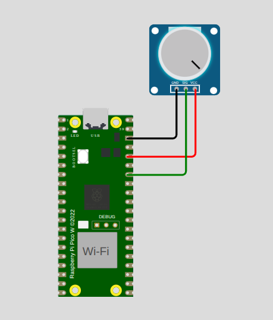

A potentiometer (or "pot") is basically a knob that lets you control a voltage or resistance.
Think of it like the volume knob on a speaker. Turning the knob changes the value, and a microcontroller such as a Raspberry Pi Pico can read that change.
A normal potentiometer has 3 pins:
The middle pin is the important one when using a potentiometer with a Raspberry Pi Pico. Its voltage changes as you turn the knob.
Potentiometer Raspberry Pi Pico
Pin 1 ──────────── 3.3V
Pin 2 ──────────── GP28 (ADC0)
Pin 3 ──────────── GND
The Pico measures the voltage coming from the middle pin. As you turn the knob, that voltage changes from approximately 0V to 3.3V.
The Raspberry Pi Pico uses 3.3V logic. Do not connect a potentiometer to 5V and then send that voltage directly into an ADC pin. Use the Pico's 3.3V pin instead.
You turn the knob → the voltage changes → the Pico reads the voltage → your program decides what to do.
We have two measured points: (x, voltage) pairs
1. Find the slope:
m = (y2 - y1) / (x2 - x1) = (3.3 - 0) / (65536 - 430) = 3.3 / 65106
2. Use the point-slope form, y - y1 = m(x - x1), with Point 1:
y - 0 = (3.3 / 65106) * (x - 430)
3. Solve for y:
y = (3.3 / 65106) * x - (430 * 3.3 / 65106)
4. Rename y to Voltage and x to PotVal:
Voltage = (3.3 / 65106) * PotVal - (430 * 3.3 / 65106)
That is the final formula. Plug in any raw ADC reading and you get volts.
The Pi Pico's ADC does not output volts. It outputs a digital count. On this setup the raw reading runs from 430 (pot at 0 volts) up to 65536 (pot at 3.3 volts). To turn a raw count into real volts we fit a straight line through two known reference points.
Each point is a pair: (ADC reading, real voltage)
The slope tells us how many volts each ADC count is worth:
m = (V2 - V1) / (x2 - x1) = 3.3 / 65106
That is about 0.00005 volts per step. Every step of the raw reading is worth about 0.00005 volts.
Voltage = (3.3 * PotVal - 430 * 3.3) / 65106
Use it in code like this:
voltage = (3.3 * pot_val - (430 * 3.3)) / 65106
An equivalent compact form is: voltage = (3.3 / 65106) * (pot_val - 430)
If you re-measure the endpoints, the universal two-point formula is:
Voltage = (V2 - V1) / (x2 - x1) * (PotVal - x1)
where (x1, V1) and (x2, V2) are your two measured reference points. This works because a potentiometer wired as a voltage divider produces a perfectly linear voltage, so one straight line is enough to map the range.